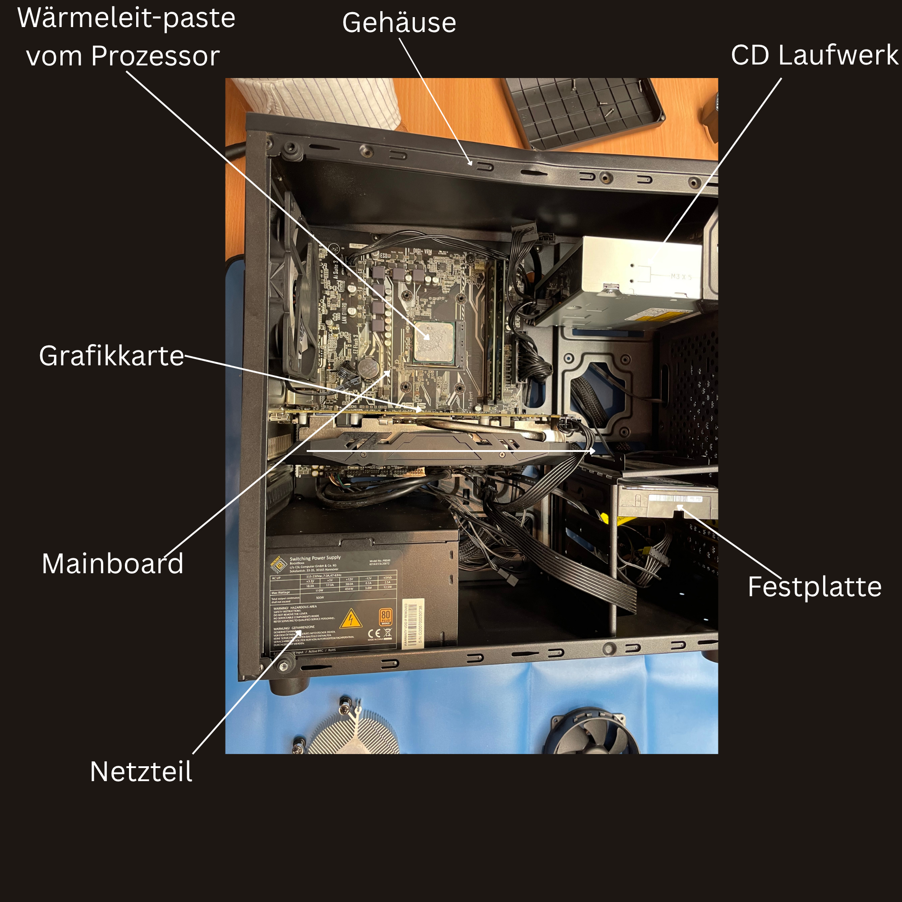

Willkommen zu meinem Praktikumsblog!
Über mich
Hallo,mein Name ist Jonathan Tüker, ich bin 17 Jahre alt. Ich gehe momentan in die 11. Klasse
am BWV in Ahaus. Ich absolviere mein Praktikum bei Simons Computer Service.
Tag 1: Erster Tag im Praktikum
- Zu Beginn habe ich einen Computer im Rahmen einer Wartungsmaßnahme intern gereinigt.
- Anschließend habe ich einen Laptop für einen Kunden eingerichtet.
- Dabei konnte ich mehr über die Betriebssysteme Linux und Microsoft erfahren.
- Außerdem habe ich eine Rechnung erstellt und an einen Kunden verschickt.
- In diesem Zusammenhang habe ich Preise für Kunden kalkuliert.
- Darauf aufbauend habe ich die daraus resultierenden Gewinne berechnet.
- Des Weiteren habe ich Server (Linux, Ubuntu, VPS) gewartet und instandgehalten.
- Zudem erhielt ich eine Einführung in WordPress.
- Im Zuge dessen habe ich die erste Domain erworben.
- Gegen Ende habe ich das E-Mail-Programm Outlook für einen Kunden eingerichtet.
- Abschließend habe ich den Cloud-Speicher OneDrive für einen Kunden eingerichtet.
Tag 2: Zweiter Tag im Praktikum
- Zu Beginn habe ich meine E-Mails überprüft.
- Anschließend habe ich mich etwa zehn Minuten lang über aktuelle IT-News informiert.
- Danach habe ich ein ProtonMail-Konto erstellt.
- Ergänzend dazu habe ich ProtonPass als Passwortmanager eingerichtet.
- Des Weiteren habe ich einen GitHub-Account erstellt.
- Im Anschluss habe ich das Programm VS Code heruntergeladen und installiert.
- Außerdem habe ich von einem Kunden den Auftrag erhalten, die alte Wärmeleitpaste zu entfernen und zu erneuern.
- Abschließend habe ich ein KI-Tool heruntergeladen und als Unterstützung genutzt, um meine erste Webseite auf GitHub zu erstellen.

Hier habe ich die Wärmeleitpaste des Prozessors ausgetauscht,
um die Kühlleistung zu verbessern.
Tag 3: Dritter Tag im Praktikum
- Zu Beginn habe ich meine erste Webseite fertiggestellt.
- Anschließend habe ich eine Werbeanzeige für einen Kunden erstellt.
- Abschließend habe ich die Buchhaltung des Unternehmens durchgeführt.
- Einführung in DNS und Domain
Tag 4: Vierter Tag im Praktikum
- Zu Beginn habe ich den Namen meiner Domain geändert.
- Anschließend habe ich weiter an meiner eigenen Website gearbeitet.
- Abschließend habe ich der Kundin das fertige Ergebnis ihrer Website für ihre Tischlerei-Firma präsentiert.